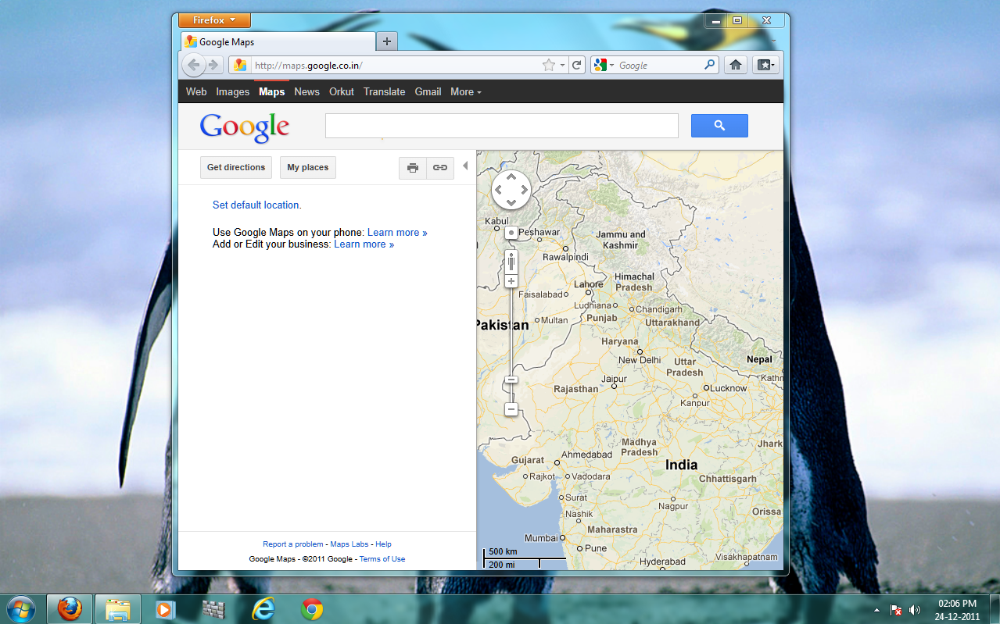

Changes in Google Maps in 15 Years (2011 and 2026)
30/05/2026 20:11 PM IST
@NiralBhatt
- Google Maps has changed dramatically over the fifteen years between mid-2011 and mid-2026.
- The screenshot from 24 December 2011 version, introduced after Google's Project Kennedy redesign, introduced in April 2011, featured a traditional desktop-focused layout with a large Google logo, black navigation bar, and a separate search box. It was mainly used for finding places and getting directions.
- The screenshot from today, i.e. 30 May 2026, shows that Google Maps has evolved into a modern, full-screen mapping platform. The interface is cleaner, faster, and centered around the map itself, with integrated search, smoother navigation, high-resolution imagery, live traffic, business information, reviews, public transport data, and much more.
- Also, if we compare the map itself, it has changed. We can see the state of Jammu and Kashmir as a single entity, whereas it was bifurcated on 31 October 2019, less than seven years ago.
- What was once a simple online map has become a real-time digital representation of the world. The comparison highlights how web design, mapping technology, and user expectations have transformed over the past fifteen years.

Google Maps on 24 December 2011
.png)
Google Maps on 30 May 2026
© 2026 Niral Bhatt. All rights reserved.